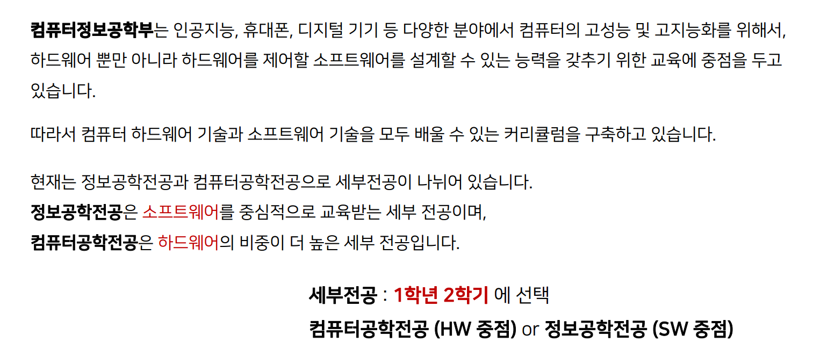

1. 컴퓨터정보공학부 소개
학부장 교수님 축사
컴퓨터정보공학부 신입생 여러분, 여러분들의 입학을 진심으로 축하합니다!!!
저는 컴퓨터정보공학부의 학부장을 맡고 있는 이기훈 교수입니다.
신입생 여러분들이 입학한 컴퓨터정보공학부에서는 컴퓨터 하드웨어와 소프트웨어를 균형 있게 교육하여 컴퓨터 관련 전 분야에서 활동할 수 있는 전문인을 양성하고 있습니다.
특히 2017년부터는 SW중심대학사업을 통해 4차 산업혁명을 선도할 수 있는 SW융합인재를 양성해오고 있습니다.
본 컴퓨터정보공학부에서는 최첨단 컴퓨터 기술에 대한 교과 교육 뿐만 아니라 SW중심 대학사업을 통해 산학연계 SW프로젝트, 국내외 인턴십, 해외 연수와 같은 다양한 비 교과 프로그램을 운영해오고 있으며, 이를 통해 현장 중심의 문제 해결 능력을 갖춘 전문 인력을 배출하고 있습니다.
대학 4년 동안 컴퓨터정보공학부의 교육과정을 충실히 마치시면 여러분들이 희망하는 진로로 나아갈 수 있다는 것을 수많은 졸업생 분들이 이미 보여주고 있습니다.
이제 대학생이라는 인생 최고의 시기를 시작하는 여러분들께 다시 한 번 뜨거운 축하의 인사를 전합니다!
컴퓨터정보공학부장 이기훈
컴퓨터정보공학부는 무엇을 배우나요?
